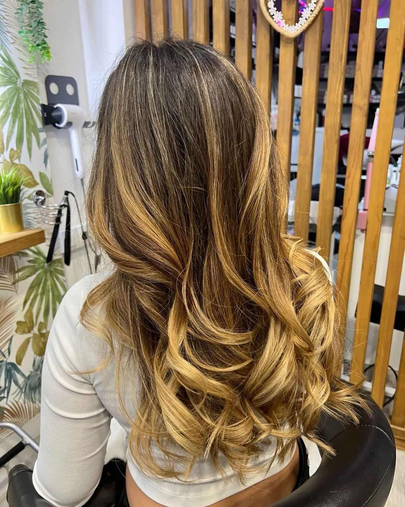
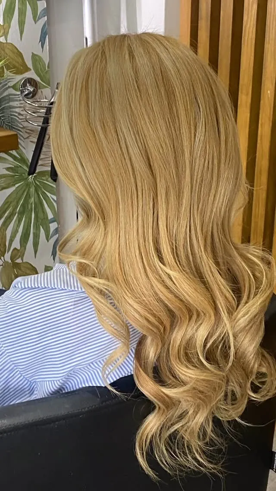
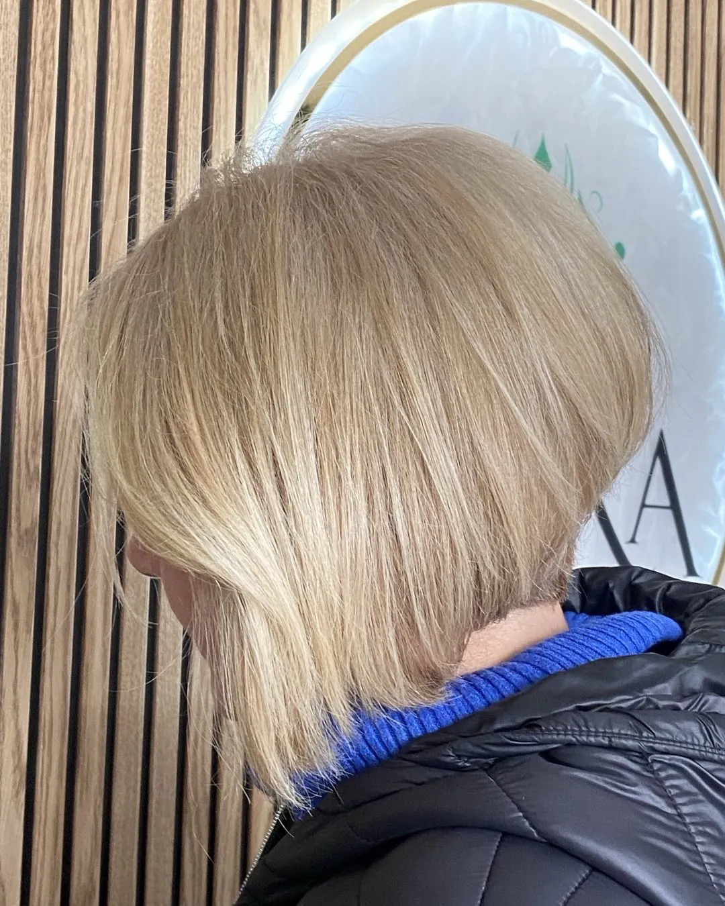
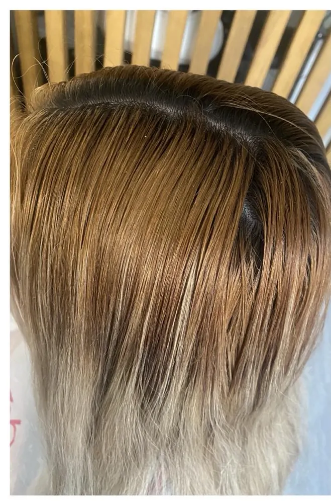

Matices
Rubios cálidos, luminosos o más fríos, según tu piel.

Luz, dimensión y movimiento
Rubios que se ven cuidados, reflejos con intención y un tono que acompaña tu piel. Escuchamos lo que buscas y valoramos cómo llegar a ello desde tu color actual.


Nuestra forma de hacerlo
«Ni todos los rubios son iguales, ni todas las melenas necesitan lo mismo.»
Lo esencial
Cuatro ideas que guían este cuidado en AURA.
Rubios cálidos, luminosos o más fríos, según tu piel.
Los cambios grandes pueden requerir varias visitas.
Valoramos el estado del cabello antes de aclarar.
Cada melena pide su propio ritmo de retoque.
Qué incluye
Elige un apartado o déjate llevar: cambia solo.

Hay rubios suaves, luminosos, cálidos y más fríos. Las referencias nos ayudan, pero el punto de partida es siempre tu cabello: color actual, porosidad y tratamientos anteriores.
Estudiamos qué zonas iluminar y qué mantenimiento encaja contigo. Un cambio gradual puede ser una buena forma de construir el resultado sin precipitar el proceso.

El matiz permite ajustar los reflejos del cabello aclarado. Cuando el tono se vuelve apagado o cambia con los lavados, conviene revisar qué necesita antes de volver a trabajar toda la melena.
Valoramos el equilibrio entre luminosidad, profundidad y tono. También te explicamos por qué una imagen de referencia puede verse diferente según la iluminación y la base del cabello.
Los trabajos de aclaración requieren atención al estado de la fibra. Si el cabello está sensibilizado o tiene procesos previos, hablamos contigo de las alternativas y los tiempos.
El acabado puede completarse con un cuidado de nutrición o hidratación adecuado. En casa, una rutina ajustada y la protección frente al calor ayudan a mantener una apariencia cuidada.

No todas las melenas necesitan el mismo ritmo de retoque. El crecimiento, la técnica y el efecto deseado determinan cuándo revisar el color.
Los productos con pigmento deben elegirse y utilizarse con criterio. Pregúntanos antes de añadir un matizador a tu rutina: cantidad y frecuencia importan.
Tu cita
Sin sorpresas: sabrás qué ocurre en cada momento.
Color actual, porosidad y tratamientos anteriores.
Acordamos si el cambio es en una visita o por etapas.
Afinamos los reflejos y la luminosidad final.
Productos con pigmento: cuáles, cuánto y cada cuánto.
A tu medida
Cada propuesta se valora de forma personal. Consulta el tiempo y el presupuesto antes de confirmar tu cita.


El cambio, a tu ritmo
Desliza para comparar trabajos reales publicados por el salón. Cada cabello parte de un punto distinto y por eso cada propuesta se valora de forma personal.
Del cobre a un rubio dorado
Fotografías reales de AURA con ángulos e iluminación distintos. Los resultados dependen de cada cabello.
Hecho en AURA
Sin dudas, sin prisas
Si hay algo más que quieras saber, estamos al otro lado.
Necesitamos conocer el color previo y el estado del cabello. En algunos casos se plantea un proceso por etapas; el diagnóstico permite valorar la viabilidad.
Cuando el tono o los reflejos dejan de encajar con lo que buscas. La frecuencia varía según el cabello y los lavados; no existe un intervalo único.
Solo si encaja con tu tono y rutina. Un uso excesivo puede alterar el matiz. El equipo te dirá qué producto y frecuencia tienen sentido en tu caso.
Sí. La comparación y la galería de esta web utilizan fotografías publicadas del salón. Cada fotografía puede tener una iluminación y un ángulo distintos.
Sigue explorando
Un corte que te representa. Un color que ilumina. Una melena que apetece tocar. Empezamos escuchándote y…

Profundidad, reflejos y brillo con una elección de color personalizada. Trabajamos opciones sin amoniaco y…

Para quienes buscan una melena más manejable y un acabado pulido. Antes de elegir un tratamiento de keratina,…
Hay un momento que es solo tuyo
Cuéntanos qué necesitas. Nosotras ponemos el tiempo, las manos y el cuidado.